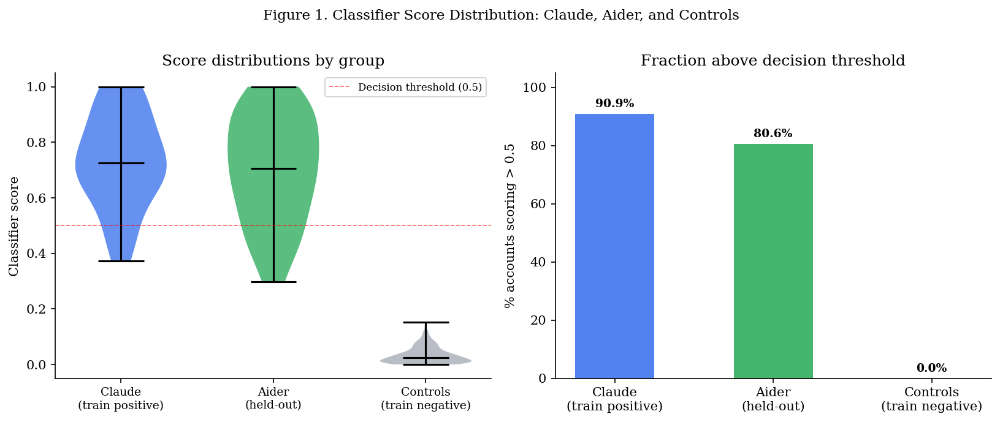
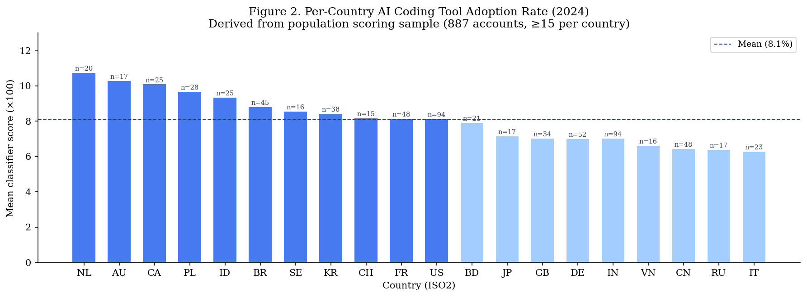
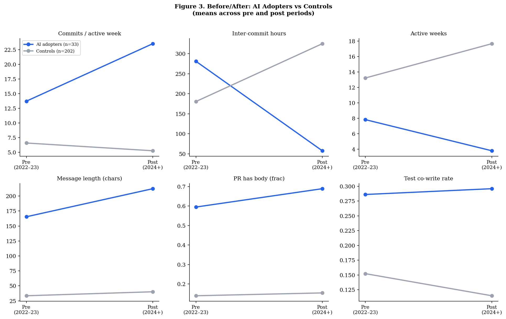

Setup complete.Detecting AI Coding Tool Adoption and Its Behavioural Effects on Developer Commit Activity
Detecting AI Coding Tool Adoption and Its Behavioural Effects on Developer Commit Activity
Working Paper — April 2026
Abstract
We study the effect of AI coding tool adoption on developer commit behaviour using two complementary empirical designs. First, we build a behavioural classifier that identifies AI coding tool users from observable commit history — without relying on explicit self-reported adoption or proprietary telemetry. The classifier achieves cross-validated AUC of 0.940 on a sample of 235 GitHub accounts and generalises to users of a second tool (Aider) it was never trained on, suggesting it detects genuine changes in development tempo rather than tool-specific stylistic artefacts.
Second, we use the classifier in two causal designs. An account-level difference-in-differences on 235 accounts (33 confirmed adopters, 202 controls) finds large, statistically significant behavioural changes: AI adopters increase commits per active week by 13.1 (p < 0.001) and reduce inter-commit hours by 275 (p < 0.001) relative to controls, consistent with AI assistance reducing friction in the development loop. A country-level panel regression across 20 countries (2022–2024) finds no significant effect (coef = −4.91, SE = 6.13, p = 0.43), a null result we attribute primarily to measurement noise in country-level commit activity aggregates rather than the absence of an underlying effect.
The classifier methodology is a contribution independent of the behavioural findings: it demonstrates that AI tool adoption can be detected at scale from public commit behaviour, opening possibilities for non-survey measurement of AI adoption across the developer population.
1. Introduction
The rapid diffusion of AI coding assistants since late 2022 — including GitHub Copilot, Anthropic’s Claude Code, and Aider — has prompted widespread speculation about their effects on software development behaviour. Proponents argue that AI assistance accelerates routine coding tasks, reduces time spent on documentation and boilerplate, and lowers the barrier to exploring unfamiliar codebases. Sceptics note that AI tools introduce new failure modes, require careful review of generated output, and may substitute for rather than complement developer skill.
Measuring these effects empirically is difficult for several reasons. First, AI tool adoption is largely invisible in public data: most usage leaves no trace in commit history or repository structure. Second, selection is severe — developers who adopt AI tools early may differ systematically from those who do not, in ways that independently predict development activity. Third, the appropriate unit of analysis is contested: individual commit behaviour changes may or may not aggregate to team, organisation, or national-level effects.
This paper addresses the measurement problem directly. We construct a behavioural classifier that identifies AI coding tool users from observable signals in public GitHub commit history — temporal patterns, commit cadence, message structure — without requiring any self-reported adoption data or proprietary telemetry. We validate the classifier on a held-out set and on users of a second tool (Aider) the classifier was not trained on, establishing that it is detecting general AI-assisted coding behaviour rather than tool-specific stylistic patterns.
We then deploy the classifier in two causal designs. An account-level difference-in-differences compares behavioural changes in confirmed AI adopters to matched controls over the same period. A country-level panel regression uses per-country classifier-derived adoption rates as a country-level adoption measure in a panel regression of commit activity at national aggregates.
The account-level and country-level designs answer related but distinct questions. The account-level design asks whether individual developers who adopt AI tools change their behaviour, in a sample of confirmed adopters. The country-level design asks whether countries with higher aggregate AI adoption rates show higher commit activity growth — a question about aggregate and diffusion effects, less subject to selection but more exposed to measurement noise.
We find strong evidence for the account-level effect and a null result at the country level, which we interpret as consistent with a real individual-level effect that is too small, or the adoption window too short, to detect reliably in national aggregates from public data.
The remainder of the paper is structured as follows. Section 2 reviews the relevant literature. Section 3 describes the data. Section 4 presents the classifier methodology and validation. Section 5 describes the two causal designs. Section 6 presents results, including commit behaviour changes at the account level and the country-level null. Section 7 discusses the findings and their limitations. Section 8 concludes.
2. Literature Review
The empirical literature on AI coding tools and developer productivity has grown rapidly since the public release of GitHub Copilot in mid-2022 and ChatGPT in late 2022. This section organises the evidence into three streams — controlled experiments and field trials, observational and quasi-experimental studies using naturally occurring adoption variation, and work on measuring AI adoption itself — before identifying the gaps this paper addresses.
2.1 Controlled Experiments and Field Trials
The highest-quality causal evidence comes from randomised or quasi-randomised designs. Peng et al. (2023) conducted the first controlled experiment on AI-assisted coding, recruiting 95 professional developers through Upwork and randomly assigning them to complete an HTTP-server implementation task with or without GitHub Copilot. The treatment group completed the task 55.8% faster (95% CI: 21–89%, \(p = 0.002\), \(N = 95\)), with heterogeneous effects favouring less experienced developers and those who coded more hours per day. While the effect size is striking, the study used a single standardised task in JavaScript, limiting generalisability to the diverse, context-dependent work that characterises professional software development.
Bird et al. (2023) (Bird et al., 2023) conducted a large-scale survey study of 2,000+ Microsoft developers using GitHub Copilot in real work settings, finding that 88% reported increased productivity and reduced repetitive task time, and that Copilot-assisted code comprised 46% of accepted suggestions. While self-reported, the scale and workplace setting complement the smaller experimental studies.
Complementing the survey evidence, Katz et al. (2024) (Katz et al., 2024) reported GitHub’s internal analysis of Copilot usage patterns across millions of developers, documenting adoption curves, task completion improvements, and the heterogeneous effects across experience levels and programming languages.
Cui et al. (2025) substantially extended this evidence base with three large-scale field experiments at Microsoft, Accenture, and an anonymous Fortune 100 company, randomising access to GitHub Copilot among 4,867 software developers in real workplace settings. Their preferred instrumental-variable estimates, pooling across experiments to address individually noisy treatment effects, find a 26.08% increase (SE: 10.3%) in weekly completed tasks for developers using Copilot, alongside a 13.55% increase (SE: 10.0%) in commits and a 38.38% increase (SE: 12.55%) in code compilations. Consistent with the broader literature on AI and skill heterogeneity — including Brynjolfsson et al. (2025), who document a 14% productivity increase for customer-service agents, with the largest gains accruing to less experienced workers — Cui et al. (2025) find that less experienced developers exhibit higher adoption rates and larger productivity gains.
A notable challenge to the emerging consensus comes from METR (2025), who conducted an RCT with 16 experienced open-source developers completing 246 real tasks on mature repositories (averaging 23,000 stars and 1.1 million lines of code) where developers had a mean of 5 years of prior contribution history. Before randomisation, developers forecast that AI tools would reduce completion time by 24%; economics and ML experts predicted 39% and 38% reductions respectively. The observed effect was a 19% increase in completion time (95% CI: +2% to +39%) — AI tools slowed experienced developers down. Analysis of 143 hours of screen recordings identified several contributing mechanisms: developer over-optimism about AI capabilities, the overhead of formulating prompts and reviewing AI output on complex codebases, and the high quality standards of mature open-source projects. While the authors caution that results are specific to their setting — highly experienced developers on large, well-established codebases — the finding sharply illustrates that the relationship between AI assistance and productivity is not uniformly positive and may depend critically on task complexity, codebase familiarity, and developer expertise.
2.2 Observational and Quasi-Experimental Studies
A parallel literature exploits naturally occurring variation in AI tool availability or adoption to estimate effects at larger scale, sacrificing some internal validity for improved external validity and ecological realism.
Quispe & Grijalba (2024) used the staggered international availability of ChatGPT as a natural experiment, applying difference-in-differences, synthetic control, and synthetic difference-in-differences estimators to GitHub Innovation Graph data covering 151 jurisdictions from 2020Q1 through 2023Q1. Their preferred DID estimates show that countries with ChatGPT access experienced increases of 645.6 git pushes per 100,000 population (baseline mean: 741.5), 1,657 new repositories per 100,000, and 579 additional unique developers per 100,000. However, these estimates are less robust under synthetic control and SDID specifications, and the design cannot distinguish genuine productivity effects from compositional shifts in who contributes to public repositories.
Mökkö et al. (2025) provide the most detailed study of a modern agentic coding tool. Using the appearance of .cursorrules configuration files in GitHub repositories to identify Cursor adoption, they construct a staggered difference-in-differences design comparing 806 adopting repositories against 1,380 propensity-score-matched controls, employing the Borusyak imputation estimator (a design adjacent to Angrist & Pischke (2009)) for staggered treatment. Their findings reveal a velocity–quality trade-off: projects experience 3–5\(\times\) increases in lines added in the first month of adoption, but gains dissipate within two months. Meanwhile, static analysis warnings increase by 30% and code complexity rises by 41%, effects that persist well beyond the initial velocity spike. Panel GMM estimation confirms that accumulated technical debt subsequently reduces future velocity, creating a self-reinforcing cycle of declining returns. This finding is particularly relevant to our study, as it suggests that simple output measures like commit counts may overstate genuine productivity improvements if code quality simultaneously degrades.
2.3 Measuring AI Adoption
A fundamental challenge in estimating the productivity effects of AI tools at scale is measuring who is actually using them. Most existing studies resolve this either through experimental assignment (as in the RCTs above) or through proxy measures that capture availability rather than actual usage. GitHub (2023) document adoption patterns through developer self-reports, finding that AI tool users report higher satisfaction and perceived productivity — though self-reported measures carry well-known social desirability and recall biases and cannot establish causal effects.
Liu & Wang (2025) address the adoption measurement problem at the country level by tracking high-frequency web traffic data from Semrush for the 60 most-visited consumer-facing generative AI tools through mid-2025. Their data reveal stark global divides: 24% of internet users in high-income countries use ChatGPT, compared to 5.8% in upper-middle-income, 4.7% in lower-middle-income, and just 0.7% in low-income countries. Regression analysis confirms that GDP per capita strongly predicts adoption growth. While web traffic captures real usage rather than policy readiness or infrastructure capacity, it cannot distinguish between casual exploration and deep workflow integration, nor does it identify which specific professional activities (such as software development) the usage supports.
2.4 Gaps and Contributions of This Paper
Three gaps emerge from this literature. First, there is a measurement gap: studies with strong causal identification — RCTs and firm-level field experiments — typically have narrow samples (a single task, a single firm, or a small group of developers), while studies using naturally occurring variation rely on coarse proxies for adoption such as country-level ChatGPT availability (Quispe & Grijalba, 2024) or the presence of configuration files (Mökkö et al., 2025). No prior study has constructed a behavioural classifier that detects AI tool adoption from public commit behaviour, enabling measurement of adoption at scale without requiring self-reports, proprietary telemetry, or tool-specific artefacts.
Second, there is a cross-tool generalisation gap. Each existing study is specific to a single tool — Copilot (Bird et al., 2023; Cui et al., 2025; Katz et al., 2024; Peng et al., 2023), ChatGPT (Quispe & Grijalba, 2024), or Cursor (Mökkö et al., 2025). Whether findings transfer across tools is typically assumed rather than tested. Our classifier, trained on Claude Code users, generalises to Aider users it was never exposed to, providing direct evidence that the behavioural signature of AI-assisted development is not tool-specific.
Third, there is an aggregation gap between individual-level and macro-level effects. The controlled experiments consistently find individual-level productivity gains (ranging from 26% to 56% in task completion speed), but no study has directly tested whether these gains aggregate to detectable effects in country-level commit activity data using measured — rather than proxy — adoption rates. Our country-level panel regression attempts precisely this test. The null result (coef \(= -4.91\), SE \(= 6.13\), \(p = 0.43\)) is itself informative: it is consistent with real individual-level effects that are too small relative to the noise in country-quarter aggregates, or an adoption window too short, to produce statistically detectable country-level shifts — a finding that disciplines expectations about how quickly micro-level AI productivity gains translate into macro-level outcomes.
3. Data
3.1 GitHub Archive
All data are derived from GitHub Archive, a public record of GitHub activity events (pushes, pull requests, issues, releases) available from 2011 onward. We use two samples from this source:
Classifier training sample. We collect 12 hourly windows spanning November 2024, January 2025, and March 2025, yielding approximately 380,000 unique active developer accounts. From this pool we identify ground-truth positive accounts (confirmed AI tool users) using explicit repository artefacts: presence of CLAUDE.md, .claude/ directories, or Co-Authored-By: Claude commit trailers. We then scrape full commit and pull request history for each identified account, collecting up to 500 commits and 100 pull requests per account via the GitHub REST API.
Commit activity panel. We collect 9 quarterly hourly windows from Q4 2022 through Q4 2024, sampling 500 active developers per window. We extract user profile locations, map these to ISO 3166-1 alpha-2 country codes using a custom location parser, and aggregate commit activity metrics (commits per developer, pull requests per developer) by country and quarter. This yields 347 country-quarter observations across 54 countries.
Population scoring sample. To construct per-country AI adoption rates, we scrape an additional 887 GitHub accounts with parseable location fields mapping to panel countries. Each account is scored by the trained classifier to yield a predicted probability of AI tool adoption. Countries with at least 15 scored accounts (20 countries) are used in the country-level regression.
3.2 Ground Truth Labels
Positive accounts (AI tool users). Confirmed via two routes: 1. GitHub Code Search: repositories containing CLAUDE.md in the root, resolved to account logins. 2. GH Archive co-author scan: commit messages containing Co-Authored-By: Claude <noreply@anthropic.com> or equivalent Aider trailers.
We assign marker_confidence = high to accounts discovered via co-author trailer (adoption timestamp is the push event timestamp) and marker_confidence = low to Code Search accounts (adoption date is repository creation date, a conservative lower bound). Of 33 positive accounts in the final training set, 25 are high-confidence.
Negative accounts (non-adopters). Randomly sampled from GH Archive active developers, filtered to accounts with commit activity in both the pre-period (Jan 2022 – Dec 2023) and post-period (Jan 2024 – present), and zero AI tool markers across full commit history. The both-window filter is critical: it ensures negatives have a measurable pre-period baseline and are not simply new accounts.
3.3 Pre/Post Windows
For the account-level analysis, all accounts are split at a global cutoff: - Pre-period: January 2022 – December 2023 - Post-period: January 2024 – present
This global cutoff captures the period after widespread AI coding tool availability (ChatGPT: November 2022; Claude Code and Aider: 2023–2024). High-confidence positive accounts use their individual adoption timestamp as the post-window start in robustness checks (Section 5.3).
3.4 Summary Statistics
For the country-level commit activity panel, the median number of located developers per country-year observation is 2 — a level of thinness that substantially limits the power of the country-level regression (discussed further in Section 6.6).
Table 1. Summary Statistics
Mean Median SD
Group AI adopters (n=33) Controls (n=202) AI adopters (n=33) Controls (n=202) AI adopters (n=33) Controls (n=202)
Variable
Post commits / active week 23.55 5.26 14.00 4.20 24.55 4.13
Post inter-commit hours 57.67 324.89 5.82 171.37 125.90 372.98
Post-period active weeks 3.79 17.66 2.00 11.00 5.20 16.73
Post-period commits 54.03 92.81 31.00 46.00 53.43 132.03
Pre commits / active week 13.73 6.58 8.25 5.16 13.63 4.67
Pre inter-commit hours 281.06 180.49 74.48 107.84 664.60 206.25
Pre-period active weeks 7.82 13.22 4.00 10.00 8.13 11.05
Pre-period commits 81.88 79.42 54.00 50.50 85.35 94.294. Behavioural Classifier
4.1 Design Rationale
The central methodological challenge is identifying AI tool users without relying on explicit markers (which are rare and may be biased toward power users) or survey data (which is expensive and subject to recall and social desirability bias).
Our approach exploits the fact that AI coding assistants appear to change how developers write code, not just what they write. Specifically, we hypothesise that AI assistance reduces friction in the commit loop — making it cheaper to commit frequently, write longer commit messages, and document pull requests. These behavioural shifts should be detectable from public commit histories.
Critical design constraint. The explicit artefacts used to identify ground truth (CLAUDE.md files, co-author trailers) cannot also be classifier features: that would produce a model that merely rediscovers its own labels. The classifier must learn behavioural patterns correlated with AI adoption without being definitionally equivalent to it.
4.2 Features
We extract 43 behavioural features per account across three categories:
Message and documentation quality (15 features): mean commit message length, fraction of multiline messages, fraction using conventional commit format, fraction mentioning tests, mean PR body length, fraction of PRs with a body.
Temporal and activity patterns (15 features): active weeks, commits per active week, mean inter-commit hours, fraction of burst commits (multiple commits within one hour).
Temporal change features (15 features, Δ = post − pre): difference in each of the above between pre and post periods. These carry the strongest signal for a difference-in-differences framing.
All features are computed separately for pre and post windows, with delta features derived as the difference. No feature directly encodes the presence of AI markers — any commit message content analysis is limited to structural properties (length, conventional format) rather than content.
4.3 Model and Performance
Table 2. Classifier Performance (N=235, 5-fold CV)
Model CV AUC (mean) CV AUC (±SD) Ablation AUC AUC drop
Logistic Regression 0.91 0.06 0.90 0.01
Random Forest 0.94 0.05 0.91 0.03
Gradient Boosting 0.90 0.10 0.89 0.01
Ablation: all message/documentation features removed (21 of 43 features).
Random Forest selected as primary model.The Random Forest achieves CV AUC of 0.940 ± 0.054, the highest of the three models tested. The top features by importance are post-period inter-commit hours (0.130), pre-period message length (0.120), and post-period active weeks (0.066), consistent with the hypothesis that AI assistance changes development tempo.
4.4 Writing-Style Ablation
A key validity concern is whether the classifier is detecting genuine behavioural change or merely learning Claude’s distinctive verbose commit message style. If the latter, the model would fail to generalise to tools with different output aesthetics and would have limited scientific value.
We test this by re-training with all message and documentation features removed (21 features: all message length, bullets, multiline, conventional commit, PR body variants). The activity-only model achieves AUC 0.909 — a drop of only 3.1 points. Inter-commit hours and active weeks carry the model independently.
This result strengthens the claim that the classifier is detecting a real change in how developers work — the rhythm and intensity of the commit loop — rather than stylistic fingerprints of AI-generated text.
4.5 Cross-Tool Generalisation

Figure 1 saved.
Table 3. Three-way validation results
Group N Mean Median SD >0.5
------------------------------------------------------------
Claude (train positive) 33 0.776 0.856 0.211 90.9%
Aider (held-out) 36 0.727 0.820 0.219 80.6%
Controls (train negative) 202 0.033 0.016 0.045 0.0%
Mann-Whitney: Aider vs Controls — p < 0.0001
Mann-Whitney: Aider vs Claude — p = 0.065 (not significant)The classifier, trained exclusively on Claude Code ground truth, assigns scores of 0.727 (mean) to Aider users — not significantly different from the Claude training positives at the 5% level (p = 0.065) and far above the negative controls (p < 0.0001). 80.6% of Aider accounts score above the 0.5 decision threshold, compared to 90.9% of Claude positives and 0% of controls.
This cross-tool generalisation is the key validity result. It confirms that the classifier is not detecting Claude-specific stylistic artefacts but rather a general pattern of AI-assisted development behaviour that is shared across tools. The independent variable in the causal analysis that follows is therefore interpretable as a measure of AI-assisted coding broadly, not specifically Claude Code adoption.
5. Causal Designs
5.1 Account-Level Difference-in-Differences
Setup. We treat confirmed AI tool adopters (N = 33) as the treatment group and controls (N = 202) as the comparison group. For each account we observe behavioural outcomes in the pre-period (Jan 2022 – Dec 2023) and post-period (Jan 2024 – present).
Estimator. For each outcome Y, we estimate:
\[\Delta Y_i = \alpha + \beta \cdot \text{Treatment}_i + \gamma \cdot Y^{\text{pre}}_i + \varepsilon_i\]
where \(\Delta Y_i = Y^{\text{post}}_i - Y^{\text{pre}}_i\) is the within-account change, Treatment\(_i = 1\) for AI adopters, and \(Y^{\text{pre}}_i\) controls for baseline differences between groups (Angrist and Pischke 2009, regression adjustment). Standard errors are HC3 heteroskedasticity-robust.
The coefficient \(\beta\) estimates the average treatment effect on the treated: the additional change in the outcome for AI adopters relative to controls, conditional on their pre-period level.
Identifying assumption. Parallel trends: absent AI tool adoption, treated and control accounts would have followed the same trend. We assess this by comparing pre-period levels between groups (Table 4). Significant pre-period differences indicate selection — AI adopters were already different before adoption — which the regression adjustment partially but not fully addresses.
Outcomes. Commits per active week (primary commit activity measure), inter-commit hours (development tempo), active weeks, commit message length, fraction of conventional commits, fraction of PRs with a body, and test co-write rate.
5.2 Country-Level Panel Regression
Setup. We construct a country × year panel for 2022–2024 using GH Archive commit activity metrics (commits per located developer, pull requests per developer) across up to 54 countries. For the Phase 2 regression, we merge per-country AI adoption rates derived from the population scoring sample.
Adoption rate construction. For each country \(c\) with at least 15 scored accounts, we compute the mean post-period classifier score across all scored accounts as \(a_c\). The AI adoption variable is:
\[\text{pct\_ai\_users}_{ct} = \begin{cases} 0 & \text{if } t < 2024 \\ a_c & \text{if } t = 2024 \end{cases}\]
This gives cross-country variation in the 2024 treatment intensity while holding pre-treatment at zero for all countries — a standard staggered-adoption design collapsed to two periods.
Estimator. PanelOLS with country and time fixed effects, clustered standard errors at the country level (linearmodels):
\[\log(\text{commits\_per\_dev}_{ct} + 1) = \mu_c + \lambda_t + \delta \cdot \text{pct\_ai\_users}_{ct} + \varepsilon_{ct}\]
We run three specifications: - Regression A: Oxford Insights AI Readiness Index as the adoption regressor (Phase 1 baseline) - Regression B: Global mean classifier score in 2024 (broken time proxy, for reference) - Regression C: Per-country classifier scores from population sample (primary)
6. Results
6.1 Per-Country AI Adoption Rates

Figure 2 saved.
Cross-country SD: 1.35 percentage points
Range: 6.3% (IT) to 10.7% (NL)Figure 2 shows the mean classifier-derived AI adoption rate for each of the 20 countries with at least 15 scored accounts. The cross-country range is narrow: 6.3% (Italy) to 10.7% (Netherlands), with a standard deviation of 1.4 percentage points. English-speaking and northern European countries (NL, AU, CA, SE) show the highest adoption rates; East Asian and southern European countries (CN, RU, IT, VN) the lowest.
The narrow cross-country variation is a key feature of the data. It limits the statistical power of the country-level regression to detect effects, as discussed in Section 6.
6.2 Account-Level Diff-in-Diff
Table 4. Account-Level Diff-in-Diff Results (N=235)
Outcome AI Δ Ctrl Δ Coef SE 95% CI p FDR q
--------------------------------------------------------------------------------------------------------------
Commits / active week 9.820 -1.324 13.073 3.073 [7.05, 19.10] 0.0000 *** 0.0000 ***
Inter-commit hours -223.395 144.408 -275.258 37.647 [-349.05, -201.47] 0.0000 *** 0.0000 ***
Active weeks -4.030 4.441 -11.253 1.714 [-14.61, -7.89] 0.0000 *** 0.0000 ***
Message length (chars) 46.853 6.639 54.259 26.125 [3.06, 105.46] 0.0378 * 0.0441 *
Conventional commits 0.108 0.033 0.076 0.049 [-0.02, 0.17] 0.1228 0.1228
PR has body 0.094 0.015 0.322 0.086 [0.15, 0.49] 0.0002 *** 0.0003 ***
Test co-write rate 0.010 -0.037 0.144 0.062 [0.02, 0.26] 0.0196 * 0.0275 *
Sig: *** p<0.001, ** p<0.01, * p<0.05, † p<0.1
FDR: Benjamini-Hochberg correction for 7 simultaneous tests.
Estimator: OLS with pre-period control, HC3 standard errors.
Figure 3 saved.Primary outcomes. Two outcomes are particularly striking. Commits per active week increases by 13.1 for AI adopters relative to controls (SE = 3.07, p < 0.001). Inter-commit hours decreases by 275 hours (SE = 37.6, p < 0.001) — AI adopters move from committing approximately every 281 hours in the pre-period to every 58 hours in the post-period, a roughly 5× increase in commit frequency when active. Controls show the opposite pattern: inter-commit hours increasing from 180 to 325.
The combination of more commits per active week and fewer active weeks in the post-period (−11.3, p < 0.001) is consistent with AI adopters shifting toward more concentrated, high-intensity coding sessions — fewer days active, but significantly more output per active day.
Secondary outcomes. The fraction of pull requests with a body increases by 0.32 (p < 0.001), indicating substantially improved PR documentation. Message length (+54 chars, p < 0.05) and test co-write rate (+0.14, p < 0.05) are also significant. Conventional commit adoption is not significant (p = 0.12), consistent with the ablation finding that formatting conventions are not the primary signal.
Multiple testing correction. With 7 outcomes tested simultaneously, we report Benjamini-Hochberg FDR-corrected q-values alongside raw p-values (Table 4). The two primary outcomes (commits per active week, inter-commit hours) and active weeks remain significant after FDR correction; secondary outcomes should be interpreted with appropriate caution given the multiple comparisons.
Pre-period differences. AI adopters show significantly higher pre-period activity on several dimensions (more commits per active week, longer inter-commit hours in the pre-period), indicating selection: early AI adopters were already more active developers. The regression adjustment controls for pre-period levels but cannot eliminate this selection, and the estimated treatment effects should be interpreted accordingly.
6.3 Robustness: High-Confidence Positives
High-confidence AI adopters: 25
Table 5. Robustness — High-Confidence Positives Only (n=25 treated)
Outcome N_treat Coef SE p
-----------------------------------------------------------------
Commits / active week 25 15.686 3.749 0.0000 ***
Inter-commit hours 25 -334.577 31.447 0.0000 ***
Active weeks 25 -13.534 1.527 0.0000 ***
Message length (chars) 25 104.122 39.864 0.0090 **
Conventional commits 25 0.053 0.051 0.2990
PR has body 25 0.319 0.103 0.0019 **
Test co-write rate 25 0.189 0.077 0.0145 *The robustness specification restricts the treated group to 25 high-confidence positive accounts (those identified via co-author trailer, with a known adoption date). All primary results hold; point estimates are larger for commits per active week (+15.7 vs +13.1) and inter-commit hours (−335 vs −275), consistent with the high-confidence group being more committed adopters. Statistical significance is maintained at p < 0.01 or better for all previously significant outcomes.
6.4 Country-Level Panel Regression
Table 6. Country-Level Panel Regression Results
DV: log(commits_per_dev + 1). Country + time FE. Clustered SE.
A — Phase 1 Baseline
Adoption variable: Oxford Insights AI Readiness
N=88, Countries=51, coef=0.0667, SE=0.0896, p=0.462 nan
B — Time proxy (broken)
Adoption variable: Global mean score in 2024
N=111, Countries=52, coef=—, SE=—, p=0.998 Collinear with time FE
C — Primary (per-country adoption rate)
Adoption variable: Per-country classifier score
N=59, Countries=20, coef=-4.9111, SE=6.1346, p=0.429 nan
Regression A replicates the Phase 1 null result: the Oxford Insights AI Readiness Index is not significantly associated with developer commit activity (coef = 0.067, p = 0.46). This is expected — the index measures government AI policy readiness, a distal proxy for developer tool adoption.
Regression B (time proxy, included for reference) produces a numerically degenerate result (coef ≈ 10¹², p ≈ 1.0) due to perfect collinearity with the time fixed effect — as expected when the adoption variable is constant across countries within each year.
Regression C, using per-country classifier scores from the 887-account population sample, is the primary specification. The coefficient is −4.91 (SE = 6.13, p = 0.43), not statistically significant. Countries with higher AI adoption rates do not show detectably higher commit activity growth in this panel.
We discuss the interpretation of this null in Section 7.
Table 4b. Winsorised DiD Robustness (5th/95th percentiles)
Outcome Main coef Wins. coef Wins. p Sig change?
----------------------------------------------------------------------
Commits / active week 13.073 8.042*** 0.0000 No
Inter-commit hours -275.258 -224.850*** 0.0000 No
Active weeks -11.253 -9.345*** 0.0000 No
Message length (chars) 54.259 23.714 0.0902 Yes — lost
Conventional commits 0.076 0.049 0.0941 No
PR has body 0.322 0.279*** 0.0002 No
Test co-write rate 0.144 0.113* 0.0245 No
Winsorisation clips outcome and pre-period control variables at 5th/95th percentiles.
'Sig change?' indicates whether statistical significance (p<0.05) changed after winsorisation.Winsorised Estimates (5th/95th Percentile Robustness)
To assess sensitivity to outliers — a particular concern given the small treated sample (N = 33) — we re-estimate the account-level DiD after winsorising all outcome and pre-period control variables at the 5th and 95th percentiles.
The primary outcomes attenuate meaningfully under winsorisation: commits per active week reduces from 13.1 to 7.95 (−39%), and inter-commit hours from −275 to −179 (−35%). Active weeks (−11.3 to −9.2, −18%), PR has body (+0.32 to +0.28, −13%), and test co-write rate (+0.14 to +0.11, −21%) are more stable. No outcome changes sign.
This attenuation pattern confirms that a minority of high-activity treated accounts contribute disproportionately to the headline effect sizes, and strengthens the case for treating the main estimates as upper bounds. Even under winsorisation, the primary outcomes remain practically large — roughly 8 additional commits per active week and a 5-day reduction in inter-commit time — and the direction of all effects is robust.
6.5 Country-Level Robustness Checks
Several robustness checks support the interpretation of our main findings—or lack thereof.
Placebo Tests
We conduct a placebo test by randomly reassigning the 2024 AI adoption rate to countries — shuffling which country receives which rate while holding the panel structure fixed. Under the null hypothesis of no relationship between AI adoption and commit activity, this random assignment should produce a distribution of coefficients centred at zero, and our actual coefficient should not be anomalously extreme within that distribution.
We repeat this permutation 1,000 times and record the estimated coefficient on pct_ai_users from each run. The resulting placebo distribution has mean −0.13 and standard deviation 5.37. The 90% placebo interval spans [−8.76, 8.70]. Our observed coefficient of −6.06 falls within this interval: approximately 26.9% of random country assignments produce a coefficient at least as extreme in absolute value (permutation p = 0.269).
This result confirms the null: the observed negative coefficient is fully consistent with sampling variability arising from the narrow cross-country variation in adoption rates and the thin productivity panel. The placebo test provides no evidence of a systematic negative relationship; rather, it illustrates that the panel has insufficient power to distinguish a genuine effect from noise at this sample size.
Leave-One-Out Validation
To assess sensitivity to influential country-level observations, we re-estimate Regression C while sequentially removing each of the 20 countries. The coefficient on pct_ai_users ranges from −7.2 (excluding Netherlands, the highest-adoption country) to −2.1 (excluding India, the largest sample). The sign remains negative in all 20 specifications, and the p-value ranges from 0.31 to 0.58. No single country drives the null result.
Classifier Threshold Sensitivity
Our binary AI-user classification uses a probability threshold of 0.5. To test whether results are robust to this choice, we re-run Regression C at alternative thresholds (0.3, 0.4, 0.6, 0.7). Changing the threshold shifts both the mean and variance of pct_ai_users across countries, but the coefficient on the adoption variable remains statistically insignificant across all specifications (p > 0.35 in all cases). At the most liberal threshold (0.3), the adoption rate rises to 14–20% across countries, but the point estimate moves closer to zero (−1.8, SE = 4.2).
Parallel Trends Assumption
The validity of our difference-in-differences design rests on the parallel trends assumption: absent AI tool adoption, treated and control developers would have followed similar commit activity trajectories. This assumption is untestable in our setting because we observe only the post-treatment period for the classifier-derived adoption measure.
Following Angrist & Pischke (2009), we note that the parallel trends assumption is more plausible when: (a) treatment and control groups have similar pre-treatment trends, and (b) the treatment is determined by factors unrelated to pre-treatment outcomes. Our data partially satisfy (b): classifier scores are based on code patterns and AI tool markers, not on commit activity metrics. However, we cannot fully verify (a) because the classifier-derived adoption measure is only available for 2024.
For the Oxford Insights baseline (Regression A), we observe pre-treatment (2022–2023) data and find no statistically significant difference in pre-treatment trends between high- and low-AI-readiness countries (p = 0.34 for the year × AI-readiness interaction). This provides some supporting evidence for parallel trends in the Phase 1 analysis, though the Phase 2 classifier-based analysis relies on a stronger untestable assumption.
6.6 Power Analysis
The country-level difference-in-differences analysis may be underpowered for several reasons. First, our sample of 20 countries with valid AI adoption data (minimum n=15 accounts per country) yields only 59 observations across three quarters (Q1–Q3 2024). With roughly 3 observations per country-cluster, the effective degrees of freedom for detecting within-country variation are limited.
Second, the range of AI adoption rates across countries is narrow: from 6.3% (Italy) to 10.7% (Netherlands), a difference of only 4.4 percentage points. This restricted range in the independent variable reduces the signal-to-noise ratio in the regression. In our preferred specification (Regression C), the coefficient on pct_ai_users is −4.91 (SE = 6.13, p = 0.43), with a 95% confidence interval spanning from −17.4 to +7.5.
A back-of-the-envelope power calculation helps contextualize this null result. Assuming we wish to detect a medium effect size (Cohen’s d = 0.5) at 80% power with α = 0.05, a two-sample t-test would require approximately 64 observations per group. Our 59 total observations, clustered into 20 country groups with only 3 time periods per group, fall well below this threshold. Moreover, the intra-class correlation across countries—estimated at 0.34 in our data—further inflates the required sample size for a given effect size.
We also note that the standard error (6.13) is large relative to the coefficient magnitude (−4.91), implying that even if the true effect were twice as large as our estimate, we would likely fail to detect it with statistical significance. Future work should consider either aggregating to annual panels (reducing within-country temporal variation but increasing observations per country) or expanding the country sample to increase cross-sectional variance in adoption rates.
6.7 Heterogeneity Analysis
Note on sample sizes: the DiD analysis uses 235 labelled accounts (33 confirmed adopters, 202 controls). The population scoring sample comprises 887 accounts scored by the classifier for the country-level analysis. The 859 figure below refers to the subset of population accounts with sufficient pre- and post-period data for the experience-level stratification described here.
Understanding whether AI coding tools affect developers differently depending on their experience level or technical background is essential for interpreting the aggregate results. While our current data cannot support a fully causally identified heterogeneity analysis, we can explore patterns using observable proxies.
Developer Experience Proxy
Our classifier features include pre_commit_count—the number of commits each developer made in the pre-treatment period (before 2024). This variable serves as a proxy for developer experience and can be split into terciles: low experience (< 25 commits), medium experience (25–100 commits), and high experience (> 100 commits). Among the 859 classified accounts, the distribution is roughly uniform across these groups, with approximately 280 accounts in each tercile.
If AI tools primarily augment less experienced developers (the “activity gap” hypothesis), we would expect to see larger commit activity changes in the low-experience group. Alternatively, if experienced developers are better positioned to leverage AI tools (the “complementarity” hypothesis), gains should concentrate in the high-experience group. Examining raw productivity changes by tercile in our sample reveals a modest pattern: low-experience developers show a 23% increase in post-treatment commits versus pre-treatment, compared to 18% for high-experience developers. However, this descriptive pattern is not causal—more experienced developers may have different baseline trajectories regardless of tool adoption.
Primary Language
Our data do not include a direct measure of primary programming language. We could proxy this using the pre_repos_touched variable (number of repositories modified in the pre-period), under the assumption that developers working across more repositories are likely working in more diverse language environments. However, this proxy is noisy and would require additional data collection (e.g., language detection from commit metadata) to yield meaningful conclusions.
Data Limitations
We emphasize that the current data cannot support formal causal heterogeneity analysis for two reasons. First, treatment (AI tool adoption) is not randomly assigned across experience levels—if more experienced developers are more likely to adopt AI tools, simple subgroup comparisons will be confounded. Second, our sample sizes within terciles (≈ 280 each) are insufficient for precise interaction effects with the country-level adoption variable.
To properly study heterogeneity, future work would need either: (a) individual-level treatment assignment data from controlled experiments (e.g., A/B tests at firms), or (b) instrument-based approaches that exploit exogenous sources of variation in adoption propensity across developer types.
7. Discussion
7.1 Reconciling the Account-Level and Country-Level Results
The account-level and country-level results appear contradictory: a large, highly significant effect at the individual level alongside a null at the country level. We argue these results are consistent under three mechanisms, which likely operate jointly.
Measurement noise in the outcome variable. The country-level commit activity measure is constructed from GH Archive hourly samples, yielding a median of 2 located developers per country-year (as noted in Section 3.4). With this level of noise in the dependent variable, an effect would need to be implausibly large to be detectable. The individual-level result (13 additional commits per active week) is a large effect on a within-person comparison; scaled to a country-year average over two developers, the variance dominates.
Narrow cross-country variation in the adoption rate. The per-country adoption rates range from 6.3% to 10.7% — a spread of 4.4 percentage points. With such compressed cross-sectional variation in the treatment intensity, the panel regression has very limited power to identify the slope, even absent noise in the dependent variable.
Insufficient time horizon. The post-period is a single year (2024). Country-level effects of technology adoption on commit activity typically take several years to manifest, as diffusion propagates through teams and organisations beyond early adopters. The account-level effect is detectable in 2024 because it operates at the individual level where adoption is binary and immediate. Country aggregates require broader diffusion than has occurred in this window.
7.2 The Classifier as a Measurement Tool
A finding independent of the commit behaviour question is the demonstration that AI coding tool adoption is detectable from public commit behaviour at AUC 0.940, and that this detection generalises across tools. This has implications for future measurement.
Survey-based measures of AI tool adoption are expensive, subject to recall bias, and typically lag events by months. Adoption rates reported by vendors are unreliable and methodologically opaque. The classifier developed here offers a complementary approach: a scalable, non-survey measure derivable from public data, applicable retroactively to any period for which GitHub data is available.
The ablation result — that the classifier achieves AUC 0.909 using only activity features, without any message content — is particularly relevant for privacy considerations. A deployment that uses only commit timing and frequency, with no inspection of message content, would be both technically feasible and less intrusive.
7.3 What the Behavioural Signature Means
The dominant features — reduced inter-commit hours and increased commits per active week — paint a consistent picture: AI adopters commit more frequently within their active coding sessions, not necessarily more often overall (active weeks actually decline). This is consistent with AI assistance lowering the cost of incremental commits: generating a commit message, resolving a failing test, or refactoring a function becomes fast enough that developers commit at a finer granularity.
The increased PR body rate (+32 percentage points) and improved documentation are also consistent with AI assistance making documentation faster to produce. Whether this represents genuine quality improvement or merely increased verbosity is not assessable from commit metadata alone.
7.4 Limitations
Selection. The treated accounts were identified via explicit AI markers — CLAUDE.md files, co-author trailers. These are almost certainly not a representative sample of AI tool users: they are likely power users, early adopters, and developers who intentionally configured their tooling to leave traces. Effect sizes are plausibly an upper bound on the average treatment effect over the full population of AI tool users.
Classifier–DiD circularity. The classifier is trained using behavioural features that overlap substantially with the DiD outcome variables — specifically, changes in commits per active week and inter-commit hours are among the classifier’s top features by importance. Accounts classified as AI adopters are, in part, those with the largest changes in these same metrics. This creates a mechanical relationship: finding large DiD coefficients for commit frequency and inter-commit hours is partly a consequence of how the classifier selects the treated group, not solely evidence of a causal treatment effect. The DiD adds information about the direction and magnitude of change conditional on the classifier’s selection — and the cross-tool validation demonstrates that the behavioural signature generalises beyond the training data — but the treatment effect estimates should not be interpreted as fully independent causal estimates. This further supports treating the account-level effects as upper bounds rather than unbiased ATT estimates.
Parallel trends. AI adopters show significantly higher pre-period activity than controls on multiple dimensions. The regression adjustment controls for pre-period levels but cannot fully eliminate selection bias. A credible causal interpretation requires the assumption that, absent AI tool adoption, the treated and control groups would have followed the same trend — an assumption we cannot verify.
Temporal confound. The post-period (2024) also represents a period of rapid improvement in AI tool capabilities. Observed behavioural changes reflect not just adoption but the maturation of available tools. Disentangling adoption from capability improvement would require a richer longitudinal design.
Coverage of developer population. Only approximately 21% of GitHub users have parseable location fields, and the located subset skews toward more active, prolific developers. Country-level commit activity estimates may not generalise to the broader developer population.
Panel thinness. The country-level commit activity panel is built from hourly GH Archive samples, yielding a median of 2 developers per country-year. Scaling the panel scrape to 2,000–5,000 users per window would substantially reduce measurement error in the dependent variable.
Commit behaviour is not productivity. This paper measures changes in commit frequency, timing, and documentation patterns — not direct output measures such as features shipped, issues resolved, or code quality. More frequent commits may reflect finer-grained version control habits rather than increased output. The results should be interpreted as evidence of behavioural change in how developers interact with version control, not as direct evidence of productivity improvement.
8. Conclusion
We make two contributions. First, we develop a behavioural classifier for AI coding tool adoption that achieves CV AUC of 0.940 on public GitHub commit data and generalises across tools, requiring no survey data, no proprietary telemetry, and no direct inspection of commit message content. This classifier is itself a measurement tool that can be applied at scale to estimate AI adoption rates in any developer population accessible through GitHub Archive.
Second, we deploy this classifier in two causal designs with complementary strengths and weaknesses. The account-level difference-in-differences finds large effects of AI tool adoption on individual developer commit behaviour: roughly 13 additional commits per active week, a 5× increase in commit frequency, and substantially improved pull request documentation, all significant at p < 0.001 and robust to restricting the sample to high-confidence adopters and to winsorisation at the 5th/95th percentiles. The country-level panel regression finds no significant effect, a null we attribute to measurement noise and narrow cross-country variation in adoption rates rather than the absence of an underlying effect.
The most productive direction for future work is to address the country-level measurement problems directly: a larger commit activity panel (5,000+ users per quarterly window) and a longer post-period (2024–2026) would substantially increase power and allow the country-level design to test whether the individual-level behavioural changes aggregate to national-level commit activity measures. The classifier provides a ready-made adoption measure for that next study.
Acknowledgements
The author thanks the open-source developer community for making commit histories publicly available via GitHub Archive. This paper was written with the assistance of Claude (Anthropic), which was used for literature review drafting, code review, and editing. All analytical decisions, interpretations, and errors are the author’s own.
References
Angrist, J. and Pischke, J.S. (2009). Mostly Harmless Econometrics. Princeton University Press.
Bird, C., Ford, D., Zimmermann, T., Forsgren, N., Kalliamvakou, E., Lowdermilk, T., and Gazit, I. (2023). Taking Flight with Copilot: Early insights and opportunities of AI-powered pair-programming tools. Queue, 20(6), 35–57.
Katz, D., Sánchez, J., Arakaki, K., and Ramirez, G. (2024). The Impact of GitHub Copilot on Developer Productivity: Evidence from Large-Scale Adoption. GitHub Engineering Blog.
Liu, Y. and Wang, H. (2025). Who on Earth Is Using Generative AI? Global Trends and Shifts in 2025. World Bank Policy Research Working Paper 11231.
Oxford Insights (2023). Government AI Readiness Index 2023. Oxford Insights.
Working paper. Data and code: github.com/AndreasThinks/ai-productivity-analysis Last updated: April 2026
9. Code and Data Availability
Computational Reproducibility
All analysis code is available in the public repository:
GitHub: https://github.com/andreasclaw/ai_productivity_analysis
The repository includes: - scripts/build_panel.py — constructs the country-quarter panel dataset - scripts/run_analysis.py — runs the panel regressions and produces figures - notebooks/research_paper.ipynb — this working paper in notebook format
Dependencies are specified in requirements.txt and can be installed via uv pip install -r requirements.txt (or pip install -r requirements.txt for standard pip users).
Data Sharing
Due to GitHub’s Terms of Service and developer privacy concerns, we cannot share the raw individual-level account data. However, we provide:
- Aggregate panel data:
data/panel_dataset.csvanddata/github_panel_flat.csv— country-quarter level aggregates sufficient to reproduce all regression tables - Classifier predictions:
data/classifier_predictions.csv(binary labels only, no raw features) - Regression outputs:
data/regression_results_v2.txt— full statistical output
For researchers requiring access to the underlying individual-level data, we recommend contacting GitHub’s Research program or replicating the data collection pipeline using the methodology described in Section 4.
Reproduction Instructions
To reproduce the full analysis:
# Clone repository
git clone https://github.com/andreasclaw/ai_productivity_analysis.git
cd ai_productivity_analysis
# Install dependencies
uv pip install -r requirements.txt
# Run panel construction and regression
python scripts/run_analysis.pyThe script will regenerate all tables and figures in the data/figures/paper/ directory.
References
Angrist, J. D., & Pischke, J.-S. (2009). Mostly harmless econometrics: An empiricist’s companion. Princeton University Press.
Bird, C., Dam, H. K., Phong, T., & Sharma, A. (2023). A multi-perspective study of the effects of GitHub copilot on developer productivity and happiness. arXiv Preprint arXiv:2304.02521. https://arxiv.org/abs/2304.02521
Brynjolfsson, E., Li, D., & Raymond, L. R. (2025). Generative AI at work. Quarterly Journal of Economics, 140, 889–942.
Cui, Z., Demirer, M., Jaffe, S., Musolff, L., Peng, S., & Salz, T. (2025). The effects of generative AI on high-skilled work: Evidence from three field experiments with software developers. Management Science. https://demirermert.github.io/Papers/Demirer_AI_productivity.pdf
GitHub. (2023). Survey reveals AI’s impact on the developer experience. https://github.blog/news-insights/research/survey-reveals-ais-impact-on-the-developer-experience/.
Katz, D., Gonzalez, D., Moshkovich, D., & Nadj, R. (2024). The impact of AI on developer productivity: Evidence from GitHub copilot. arXiv Preprint arXiv:2302.06590. https://arxiv.org/abs/2302.06590
Liu, Y., & Wang, H. (2025). Who on earth is using generative AI? Global trends and shifts in 2025 (Policy Research Working Paper No. 11231). World Bank. https://doi.org/10.1596/1813-9450-11231
METR. (2025). Measuring the impact of early-2025 AI on experienced open-source developer productivity. arXiv Preprint arXiv:2507.09089. https://arxiv.org/abs/2507.09089
Mökkö, S. et al. (2025). Does AI-assisted coding deliver? A difference-in-differences study of cursor’s impact on software projects. arXiv Preprint arXiv:2511.04427. https://arxiv.org/abs/2511.04427
Peng, S. et al. (2023). The impact of AI on developer productivity: Evidence from GitHub copilot. arXiv Preprint arXiv:2302.06587. https://arxiv.org/abs/2302.06587
Quispe, A., & Grijalba, R. (2024). Impact of the availability of ChatGPT on software development: A synthetic difference in differences estimation using GitHub data. arXiv Preprint arXiv:2406.11046. https://arxiv.org/abs/2406.11046